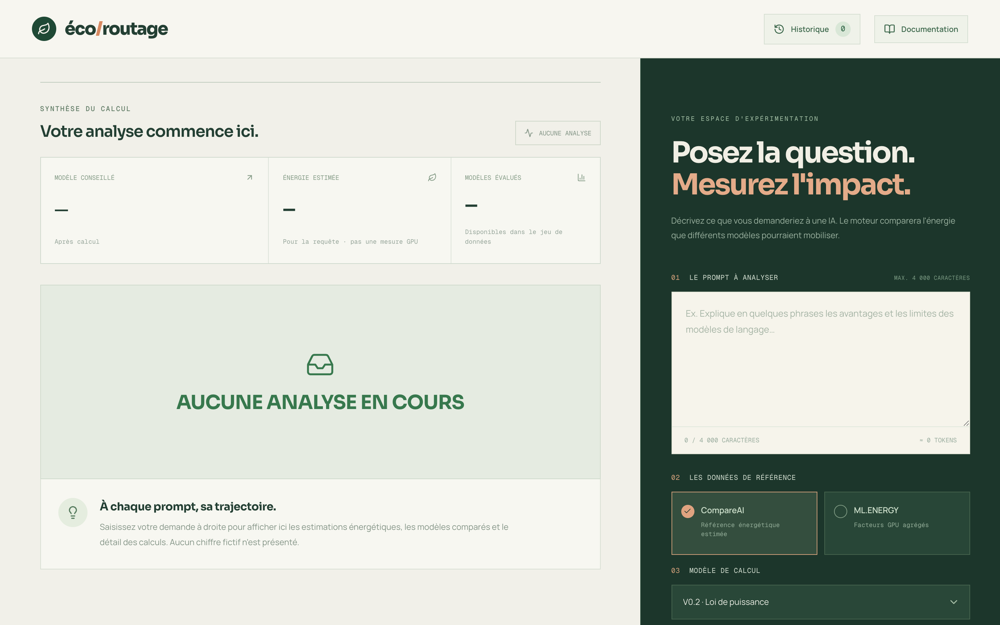
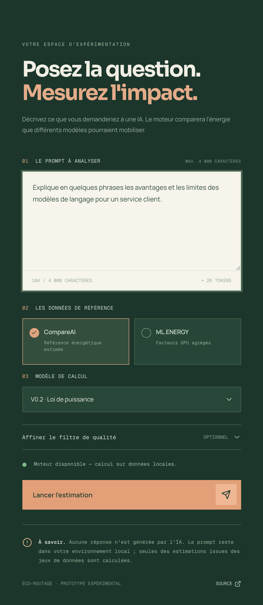
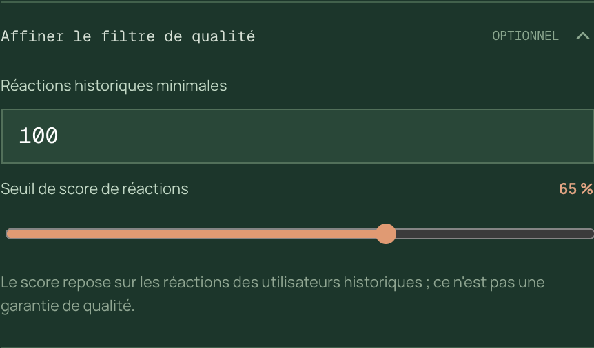
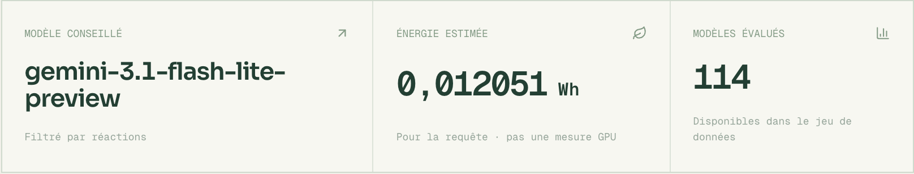
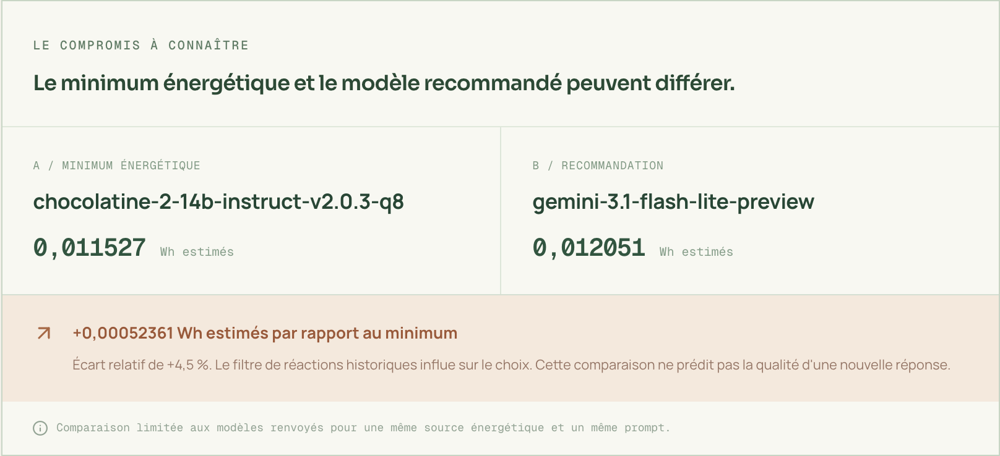
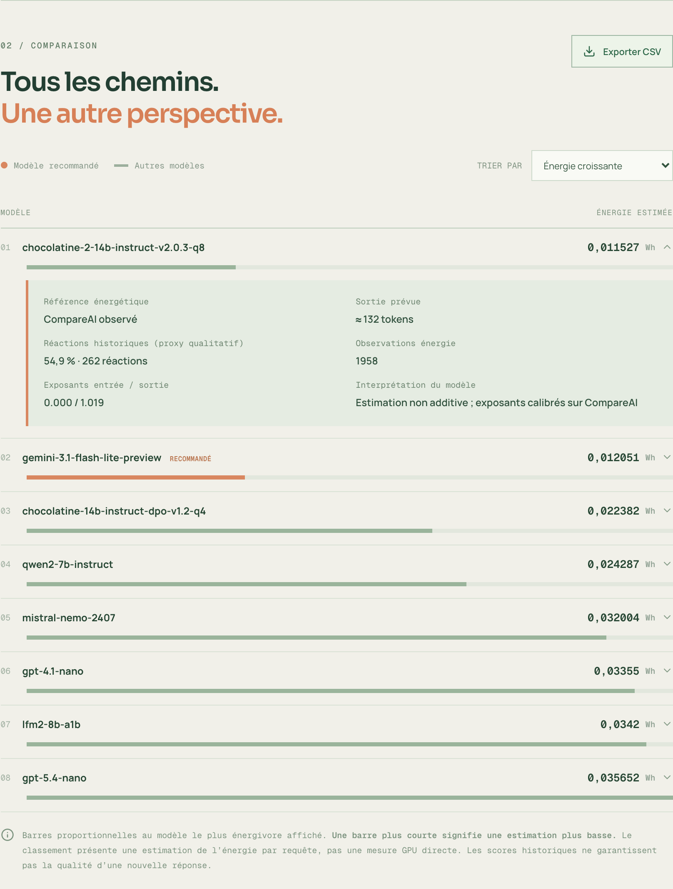
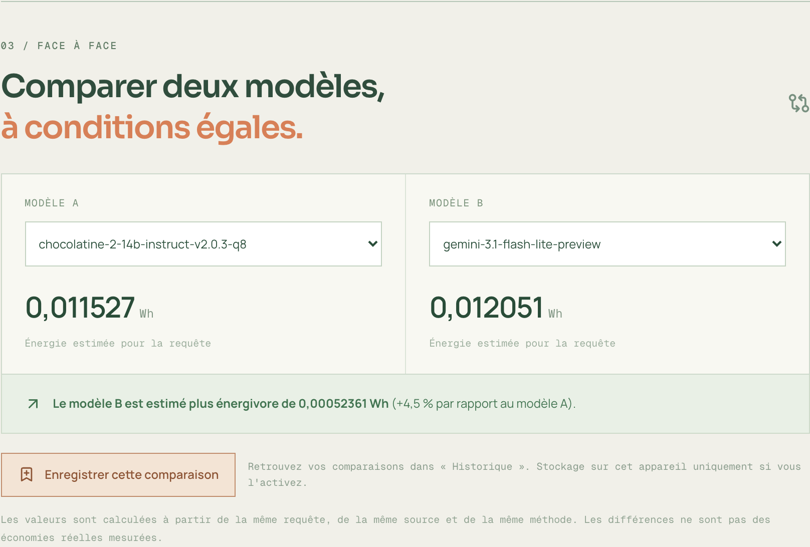
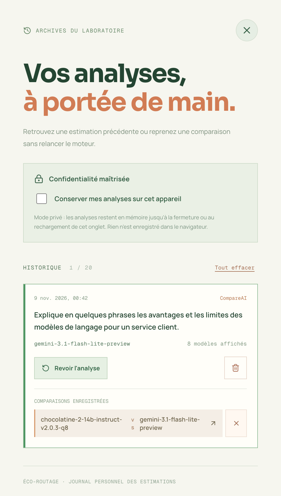
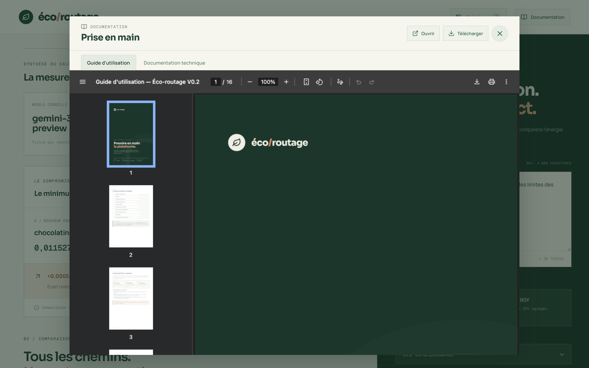

Tout ce qu'il faut savoir pour estimer l'énergie d'un prompt, comparer les modèles de langage et choisir le plus sobre — en quelques minutes.
Écrivez votre prompt dans le panneau vert à droite, cliquez sur Lancer l'estimation, puis lisez à gauche le modèle conseillé et son énergie estimée en Wh. Comparez ensuite deux modèles dans le face-à-face et retrouvez tout dans Historique.
Éco-routage estime l'énergie qu'une requête consommerait selon le modèle de langage utilisé, puis classe les modèles du plus sobre au plus énergivore. L'objectif : orienter chaque prompt vers un modèle adapté et économe.
Le texte que vous enverriez à une IA, jusqu'à 4 000 caractères.
Tokens d'entrée, longueur de réponse prédite, énergie par modèle.
Le modèle conseillé, son énergie en Wh et les alternatives.
Votre prompt reste dans votre environnement local. Il est transmis uniquement au moteur de calcul qui tourne sur votre machine.
La plateforme se compose de deux éléments à démarrer : le moteur de calcul (API Python) et l'interface (application web). Dans le dossier V0.2_partage :
# 1. Moteur de calcul (terminal n°1) python -m uvicorn api.main:app --reload --port 8000 # 2. Interface (terminal n°2) cd frontend npm run dev
Ouvrez ensuite http://localhost:5173 dans votre navigateur. Sous le formulaire, le voyant doit afficher « Moteur disponible — calcul sur données locales. »
Les fichiers CompareAI (conversations.parquet et reactions.parquet) doivent être présents dans source_données/compareAI/. Sans eux, le calcul reste désactivé et la plateforme vous l'indique.
Dans chacun des deux terminaux, appuyez sur Ctrl + C. Vos analyses en mode privé sont alors perdues ; celles conservées sur l'appareil restent disponibles au prochain lancement.
L'interface est organisée en deux colonnes : à droite, vous posez la question ; à gauche, vous lisez la réponse du moteur.

| Zone | Rôle |
|---|---|
| En-tête | Logo (retour en haut de page), bouton Historique avec le nombre d'analyses, bouton Documentation. |
| Colonne gauche | Résultats : synthèse en trois cartes, compromis énergie / recommandation, classement complet et comparateur. Avant le premier calcul, elle affiche « Aucune analyse en cours ». |
| Colonne droite (verte) | Votre espace d'expérimentation : saisie du prompt, choix des données et de la méthode, filtre de qualité, bouton de lancement et état du moteur. |
Sur un écran étroit (téléphone, fenêtre réduite), le formulaire passe au-dessus des résultats.
La première estimation peut prendre plus de temps : le moteur lit et calibre les données. Les suivantes sont plus rapides.

| Source | Ce qu'elle apporte | Quand la choisir |
|---|---|---|
| CompareAI | Référence énergétique estimée à partir de l'historique de conversations ; couvre le plus grand nombre de modèles. | Par défaut, pour comparer largement. |
| ML.ENERGY | Facteurs issus de mesures GPU réelles (médiane de plusieurs configurations) ; affiche aussi la dispersion P10–P90. | Pour un point de vue « mesuré » sur les modèles couverts. |
| Méthode | Principe |
|---|---|
| V0.2 · Loi de puissance | Méthode par défaut. L'énergie dépend à la fois de la longueur du prompt et de la longueur de réponse prédite, de façon non linéaire. |
| V0.2 · Régression additive | Additionne une base par requête, une part liée à l'entrée et une part liée à la sortie. Le détail de chaque part est visible dans le classement. |
| V0.1 · Sortie seule | Version de référence : facteur énergétique × nombre de tokens de sortie estimés. |

Plus le filtre est strict, plus la recommandation privilégie des modèles appréciés… quitte à s'éloigner du minimum énergétique. Le compromis est affiché clairement dans les résultats.


Ce bloc confronte le minimum énergétique absolu (A) et le modèle recommandé (B). S'ils diffèrent, le surcoût est donné en Wh et en pourcentage : c'est le « prix » énergétique du filtre de qualité. S'ils coïncident, la recommandation est aussi la plus sobre.

Le classement liste les modèles les plus sobres du calcul, avec leur énergie estimée.
Avec ML.ENERGY, le détail affiche la plage P10–P90 : elle reflète la variété des configurations GPU mesurées, pas un intervalle de confiance.

Les deux valeurs reposent sur le même prompt, la même source et la même méthode : la comparaison est équitable. Les écarts restent des estimations, pas des économies mesurées.
Le bouton Historique de l'en-tête ouvre un panneau latéral qui conserve jusqu'à 20 analyses.
| Mode | Comportement |
|---|---|
| Privé (par défaut) | Les analyses restent en mémoire jusqu'au rechargement ou à la fermeture de l'onglet. Rien n'est écrit dans le navigateur. |
| Conserver sur cet appareil | Les analyses sont enregistrées dans ce navigateur (localStorage), prompts compris, en clair. Décocher l'option efface cette copie. |
N'activez pas la conservation sur un ordinateur partagé si vos prompts sont sensibles. Rouvrir une analyse est une consultation : relancez l'estimation pour obtenir des valeurs à jour.

Le bouton Exporter CSV du classement télécharge un fichier eco-routage-resultats-AAAA-MM-JJ.csv, lisible directement dans Excel (séparateur point-virgule, UTF-8). Chaque ligne correspond à un modèle affiché et reprend notamment :
Le bouton Documentation ouvre une visionneuse avec deux documents : ce guide d'utilisation et la documentation technique de la V0.2 (formules, résultats, limites). Chacun peut être ouvert dans un nouvel onglet ou téléchargé.

Le voyant situé sous le formulaire indique en permanence l'état du moteur. Voici comment réagir à chaque message.
| Message affiché | Cause probable | Que faire |
|---|---|---|
| Moteur disponible — calcul sur données locales. | Tout est prêt. | Saisissez un prompt et lancez l'estimation. |
| Connexion au moteur en cours… | L'interface interroge l'API. | Patientez quelques secondes. |
| API Python inaccessible. | Le moteur n'est pas démarré ou ne répond pas sur le port 8000. | Lancez python -m uvicorn api.main:app --reload --port 8000, puis cliquez sur l'icône de rafraîchissement à côté du message. |
| Jeu de données CompareAI manquant sur le serveur. | conversations.parquet est absent. | Placez-le dans source_données/compareAI/, puis rafraîchissez. |
| Fichier de réactions CompareAI manquant. | reactions.parquet est absent. | Ajoutez-le au même dossier. |
| Données ML.ENERGY manquantes. | Le fichier de mesures ML.ENERGY est absent. | Vérifiez source_données/ml-energy-v3/runs/llm.parquet ou revenez à CompareAI. |
| Situation | Solution |
|---|---|
| Le bouton « Lancer l'estimation » reste grisé | Le prompt est vide ou le moteur n'est pas disponible : vérifiez le voyant. |
| Le calcul est long | Normal au premier lancement. Vous pouvez cliquer sur « Annuler l'attente » et relancer plus tard. |
| Un message d'erreur rouge apparaît | Le calcul n'a pas abouti : lisez le message, corrigez la cause (souvent le moteur) et relancez. |
| L'historique a disparu | En mode privé, il est effacé au rechargement. Activez « Conserver mes analyses sur cet appareil » pour le garder. |
| Le menu « Modèle de calcul » est bloqué | La source ML.ENERGY impose la méthode « sortie seule ». Revenez à CompareAI pour choisir une autre méthode. |